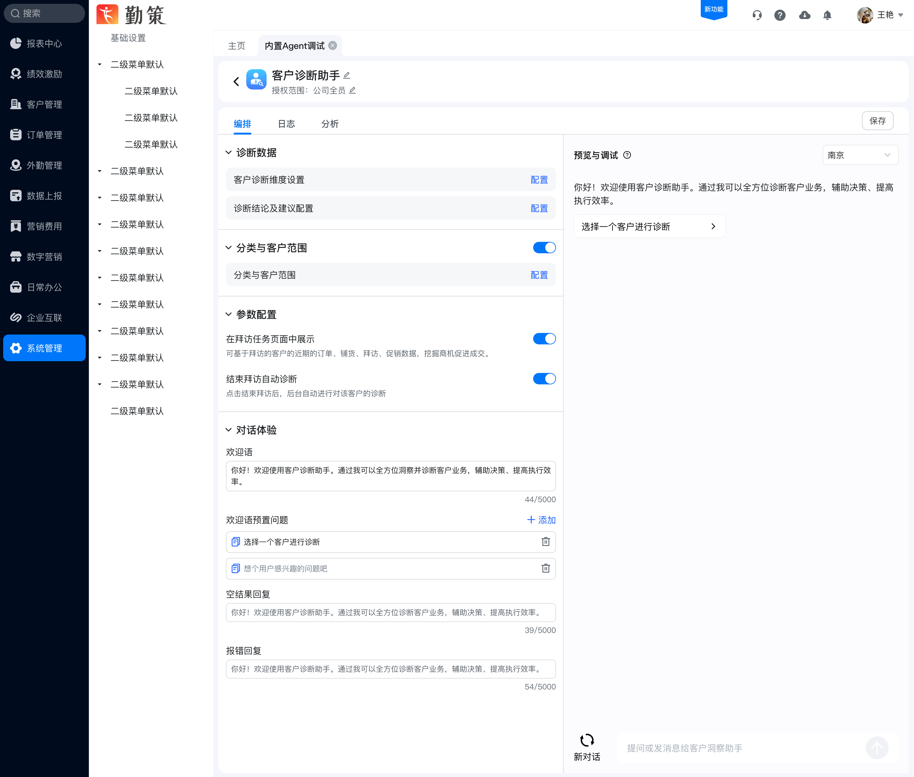
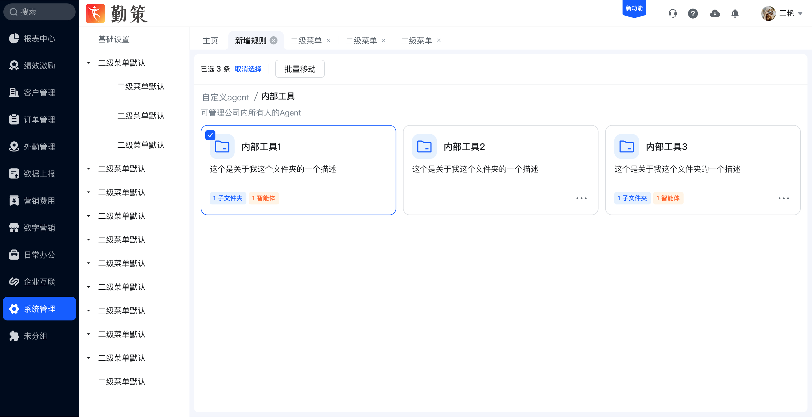

智能体库
搭建
从智能体生命周期管理到客户诊断业务编排，把专业的 AI 能力转化为企业用户可理解、可配置、可维护的工作台。


0 → 1
不是给用户更多参数，
而是建立可理解的业务秩序
随着企业智能体数量与应用场景增加，平台既要解决“如何管理越来越多的 Agent”，也要解决“如何让业务人员配置专业诊断逻辑”。两个问题共同指向信息架构、对象关系与复杂配置体验。
从单体工具走向平台化管理
智能体、分组、业务维度、客户范围和诊断结论之间存在多层关系。若直接平铺功能，用户很难判断对象归属、配置顺序和结果影响。
把 AI 能力翻译成业务动作
用企业用户熟悉的文件夹、列表、配置步骤和规则语言组织能力；通过渐进式披露，让用户先完成核心任务，再处理专业细节。
两条核心能力线，
共用一套平台设计语言
素材先按业务目标拆分为“智能体资产管理”和“客户诊断配置”，再分别梳理任务闭环，而不是机械地逐张展示页面。
智能体资产管理
让大量智能体保持可查找、可归类、可维护。
客户诊断业务编排
将洞察维度与规则判断组织成可配置流程。
切换能力模块，
查看完整关键页面
选择“智能体库”或“诊断助手”，再通过左侧步骤浏览对应设计。点击设计稿可以打开大图查看细节。
用分组建立可扩展的资产结构
文件夹与智能体使用一致的卡片节奏展示，数量与类型标签帮助用户快速判断内容构成。
把复杂诊断逻辑，
拆成连续可理解的四步
配置过程保持从“定义分析对象”到“验证结果”的稳定顺序，避免用户在多个弹窗和页面之间失去上下文。
定义洞察维度
先建立订单、客户或行为等分析维度，明确诊断依据。
圈定客户范围
通过分类树和条件组合，将规则作用范围表达清楚。
配置结论建议
把判断结果、状态颜色与业务建议形成稳定映射。
预览与调试
配置与对话预览保持同屏，便于即时发现表达或规则问题。
选择最能体现平台设计能力的细节
同一套卡片同时承载文件夹与智能体
图标、名称、描述、数量标签与更多操作形成固定骨架；对象类型不同，但浏览节奏保持一致。
树形分类与条件编辑保持在同一上下文
左侧确定业务分类，右侧完成客户条件组合；选中状态、层级与保存动作始终清晰。
配置与预览并置，让结果反馈更及时
左侧完成诊断数据、参数与对话体验设置，右侧保留真实对话预览。用户不必离开当前页面即可检查欢迎语、入口和诊断路径。
从页面方案沉淀为平台规则
业务语言优先
将模型、变量和判断逻辑转化为维度、范围、结论和建议等业务概念。
渐进式披露
先呈现完成任务所需的核心选项，再通过配置页承载复杂规则和专业细节。
上下文不丢失
分类树、表单、结果与预览尽量保持在同一工作区，减少跳转和记忆负担。
从 0 到 1 完成平台能力落地
覆盖两条核心体验链路
完成智能体分组、卡片管理、移动归类，以及诊断维度、客户范围、结论建议和调试预览等主要页面与关键状态。
2026 年 4 月上线并持续迭代
平台已具备企业智能体管理与业务配置能力；后续继续结合实际使用场景优化信息架构、规则表达与配置效率。